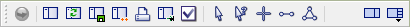

Plot Pane Toolbar
When a i Plot pane is active, the toolbar appears as below.

| Icon | Command | Description/Comment |
|---|---|---|
 |
Execute/Stop toggle | Execute or stop cycling; see the “Toolbar” topic for more information. |
| New Plot | Create a new plot in a new view pane in the active window. | |
| Regenerate Plot | Redraw the current plot to reflect the current model data, whether those data have changed or not. | |
| Save… | Save the current plot; opens a Save dialog if the plot has not previously been saved. | |
| Copy Plot | Create a duplicate of the current plot in a new view. | |
| Print Plot… | Open a Print dialog to send the current plot to a printer. | |
| Export | Open a fly-out menu to select a file type to export the current plot (the choices are Bitmap, Data file, DXF, VMRL, PostScript, SVG, and Excel). The Excel option will export an Excel table if used on a History, Table, or Profile plot item. | |
 |
Options | Show the global view settings in the Options dialog. |
| Select(1) | Put the left mouse button in “Select” mode, which is used to pick a plot item within the view. Picking an item makes it the active item in the Plot Items control set. | |
| Query(1) | Put the left mouse button in this mode, which is used to query a model object (ball, contact, etc.) for information when clicked. | |
| Center(1) | Put the left mouse button in this mode, which is used to set the center point of the current plot to the location where the mouse is clicked. | |
 |
Measure Distance(1) | Put the left mouse button in this mode, which uses a two-click point method to measure distances on the current plot. |
| Define Plane(1) | Put the left mouse button in this mode, which uses a three-click point method to define a plane on the current plot. | |
| Show/Hide Control Panel | Toggle display of the Control Panel. | |
 |
Show/Hide Control Sets | This button is a pull-down that lists the available control sets for this pane type. Select an unchecked item to display it in the control panel; select a checked item to hide it. |
Note
- The tools in this group are mouse modes. See the topic “Mouse Modes” for information. In any mode, the right mouse button is used to perform view manipulations (magnify, pan, rotate, etc.).
| Was this helpful? ... | UDEC © 2018, Itasca | Updated: Mar 15, 2024 |